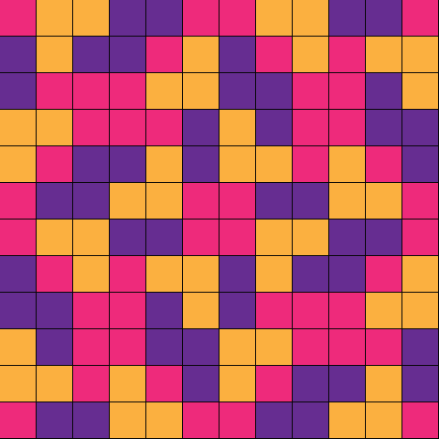
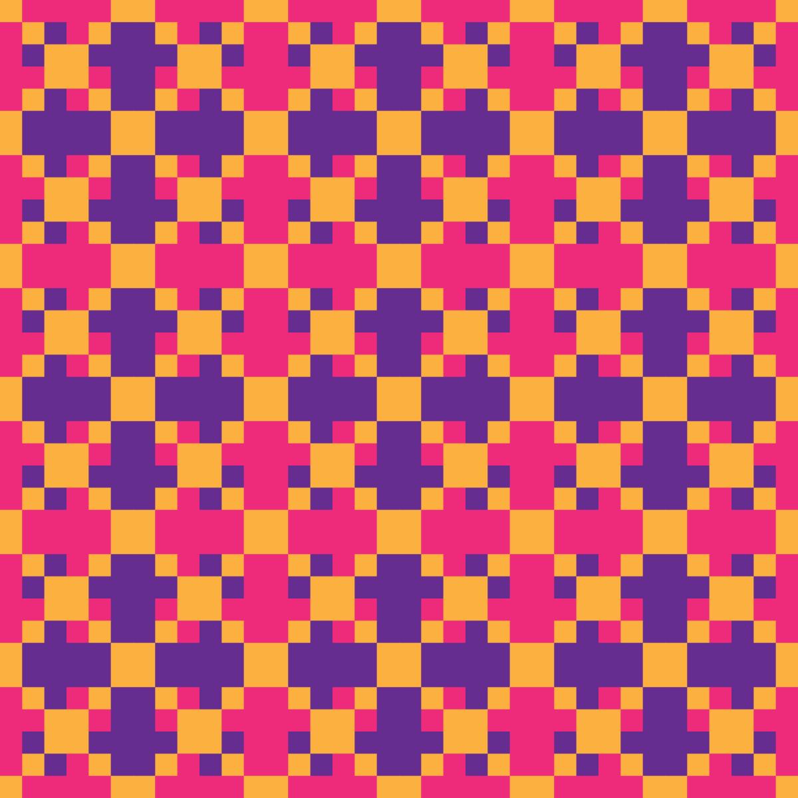
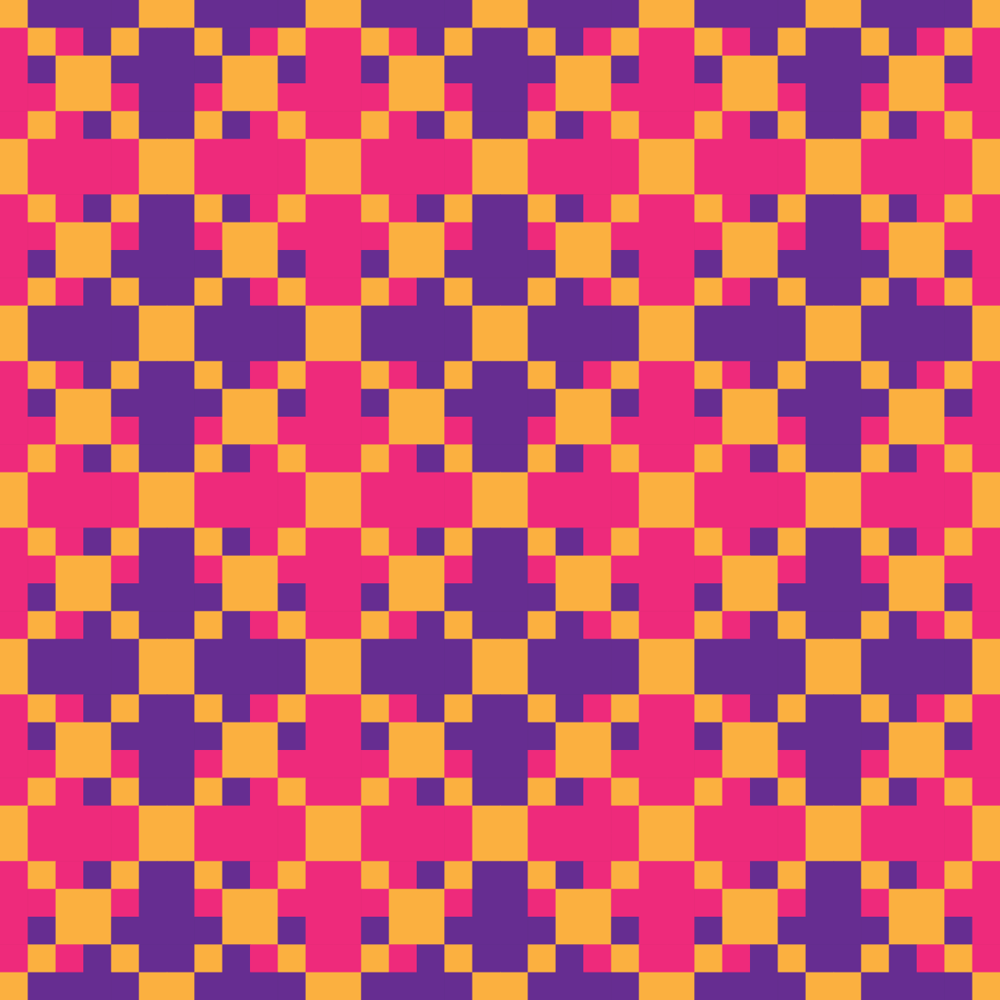
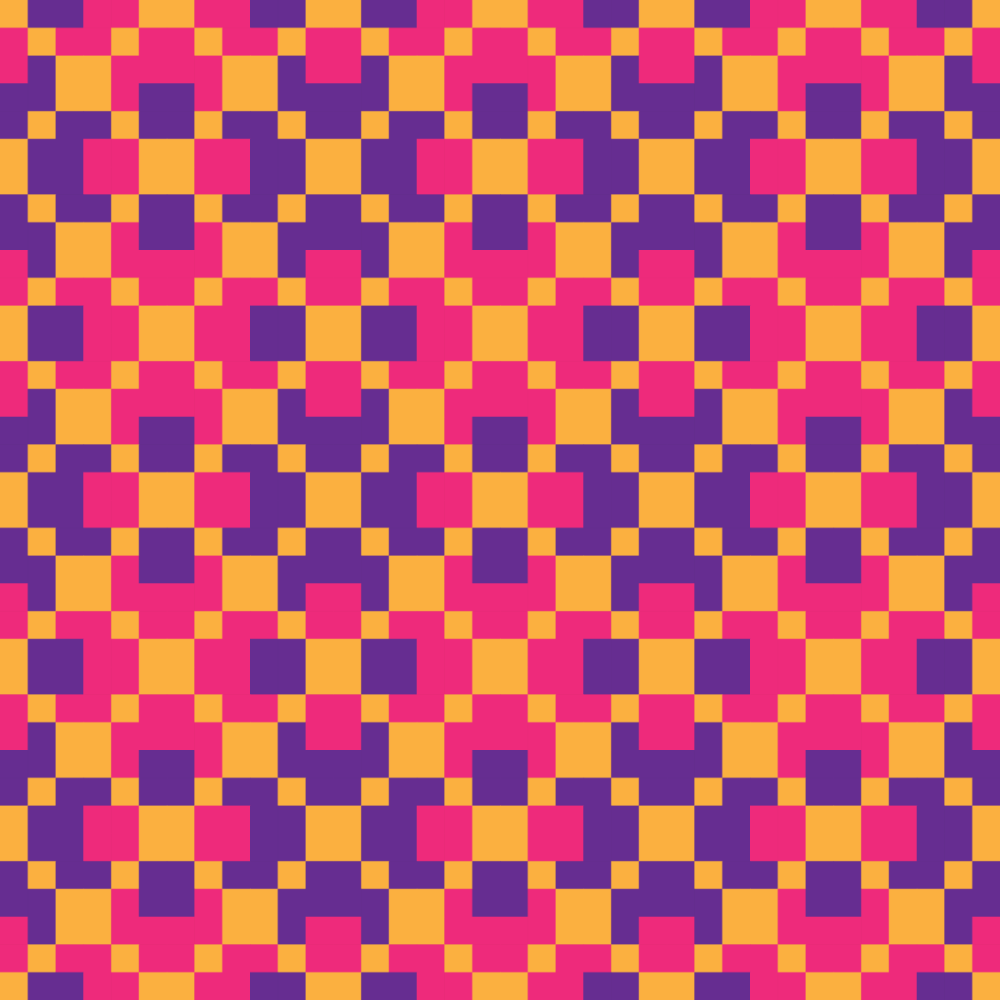
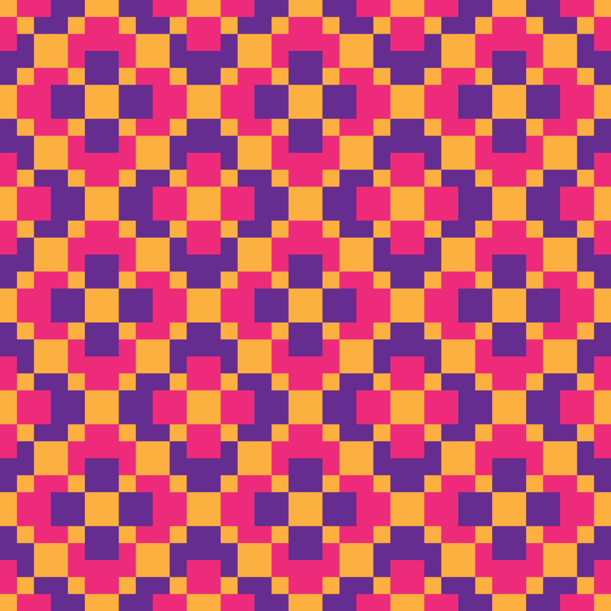
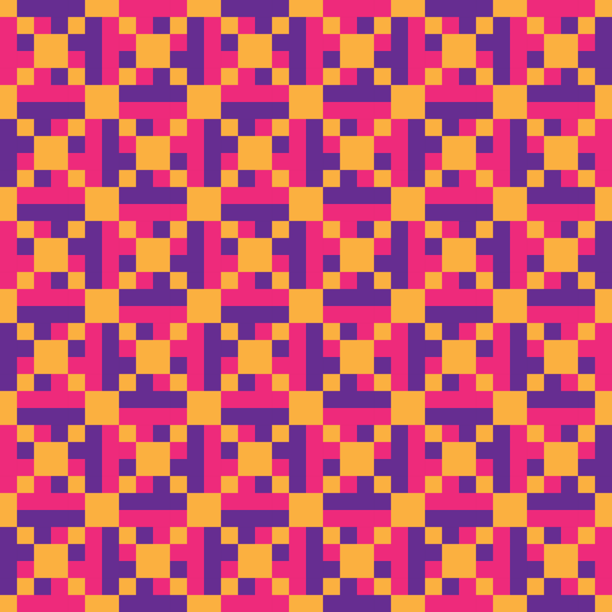
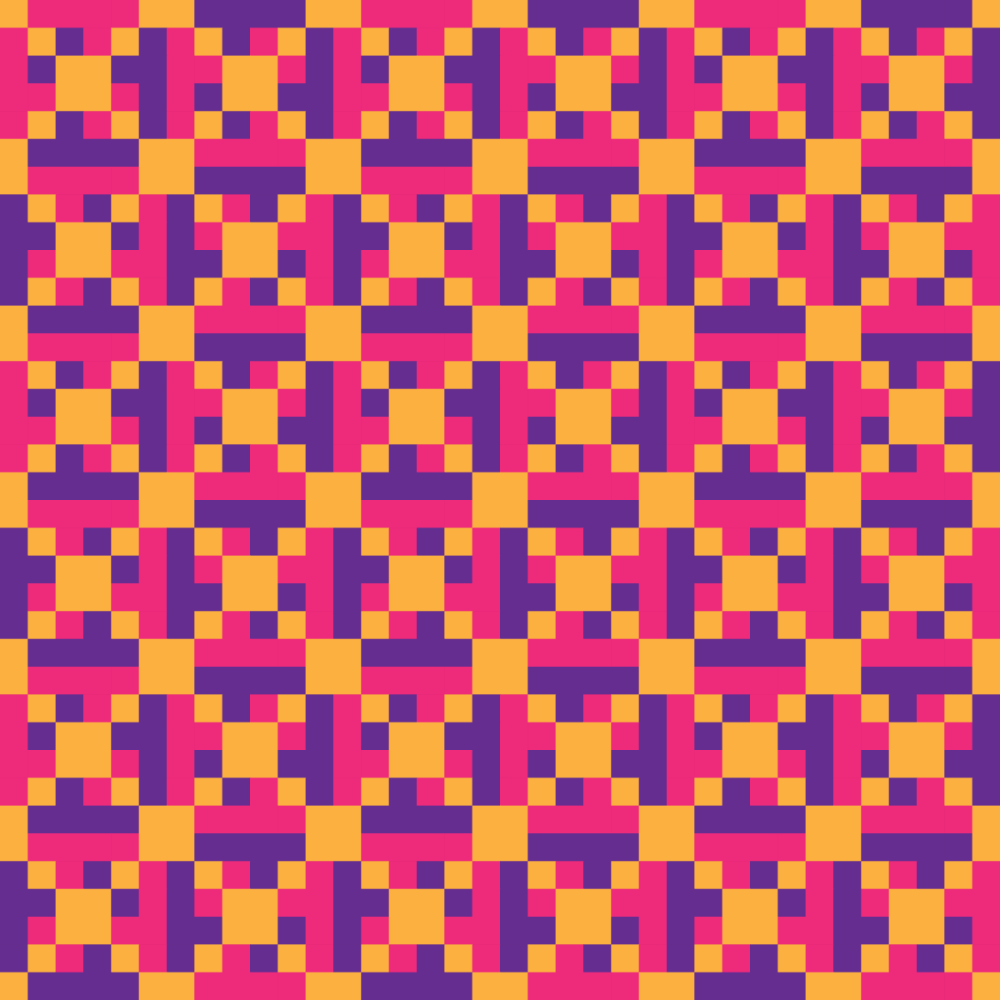
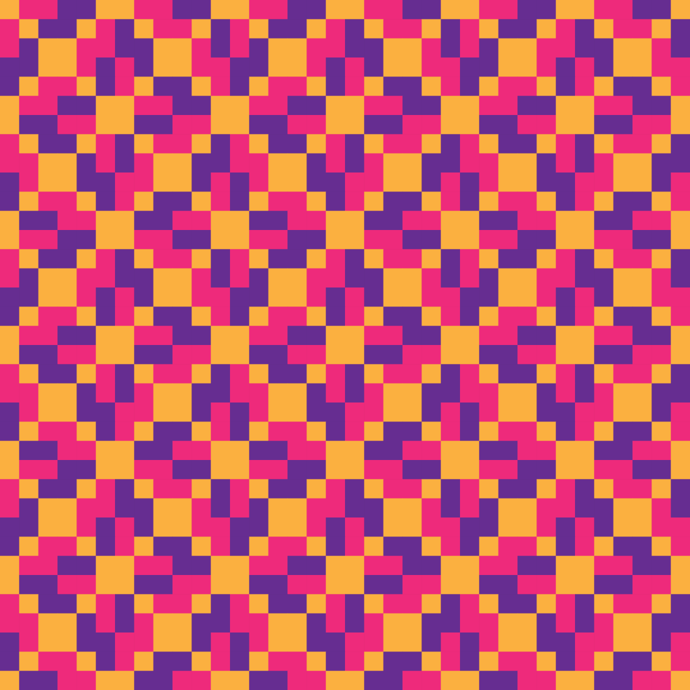
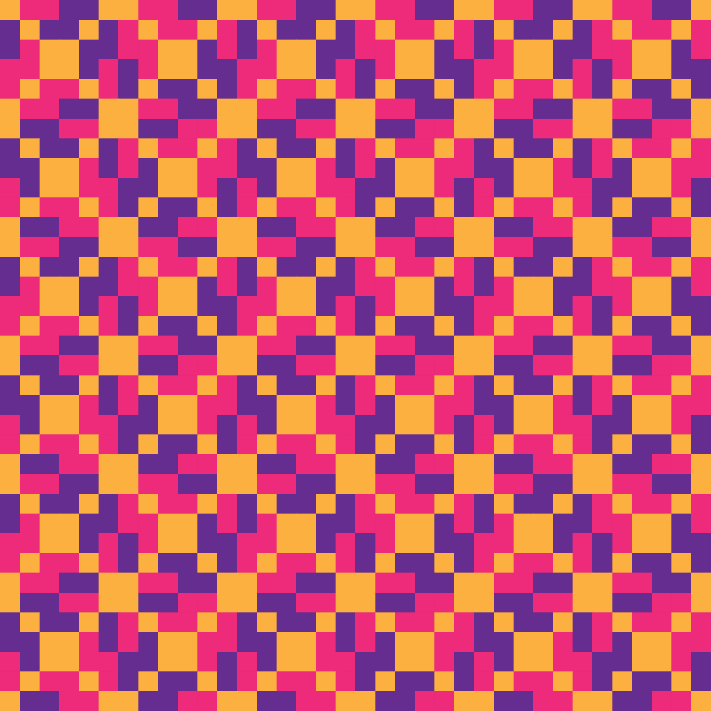

ภาษาอื่น: Français · English · Español
ฉักลักษณ์ที่ 2 — Shi, กองทัพ
ลำดับตามเวลา 2 (เรียงตามน้ำหนักฐานสอง) · ลำดับ King Wen (ดั้งเดิม) 7 · 師
โดย Anibal Edelberto Amiot — ปรับปรุงเมื่อ 1 ตุลาคม 2026
การแปลอยู่ระหว่างการตรวจทาน — หากพบข้อผิดพลาด กรุณาแจ้งให้ทราบ

มารดา
บุตรชายคนกลาง
ท่ามกลางแผ่นดินมีน้ำซ่อนอยู่: ภาพแห่งกองทัพ พลังมีอยู่ แต่ไม่เปิดเผยตน — มันตั้งมั่นพร้อมสรรพ ไร้ร่องรอย มีวินัยอยู่ใต้ผิวหน้าอันสงบ นี่คือภาพแห่งอำนาจที่ถูกเก็บงำ ซึ่งไม่จำเป็นต้องแสดงตนเพื่อจะเป็นจริง ดังนั้นวิญญูชนจึงเพิ่มพูนประชาชนของตนด้วยความเอื้ออารีที่อดกลั้น: อำนาจที่แท้จริงมิได้สถาปนาตนด้วยกำลังที่โอ้อวด หากก่อร่างขึ้นในความมั่นคงและการยับยั้งชั่งใจ
วินัยของหมู่คณะถูกกำกับดุจการเดินแถวของกองทหาร ไม่มีพลังที่กระจัดกระจายใดเทียบได้กับพลังที่มีระเบียบ: เส้นนี้กล่าวว่าอำนาจที่แท้จริงไม่เคยเป็นอำนาจของการกระทำอันเจิดจ้าเพียงครั้งเดียว หากเป็นอำนาจของระเบียบที่ธำรงไว้อย่างอดทน ซึ่งแต่ละคนรู้ที่ทางของตน และการเคลื่อนไหวของส่วนรวมอยู่เหนือแรงผลักดันของปัจเจก
หกเส้น
ที่ฐานของแผ่นดิน ความว่างปิดตัวลง: สิ่งที่เคยเป็นเพียงช่องเปิดเริ่มถูกเติมเต็ม
แผ่นดินที่มั่นคงแล้วแตะขีดจำกัดของตน: ความแข็งแกร่งที่เคยค้ำจุนสิ่งก่อสร้างกำลังจะเปลี่ยนธรรมชาติของมัน
ที่ธรณีประตูระหว่างแผ่นดินกับมนุษย์ ความอ่อนหยุ่นเพิ่มน้ำหนัก: สิ่งที่เคยยอมโอนอ่อนโดยธรรมชาติกำลังจะแข็งตัว
ในการสดับฟังของมนุษย์ ความกลวงถูกเติมเต็ม: ความพร้อมเปิดรับที่เคยรองรับกำลังจะยืนยันตนในไม่ช้า
ณ ที่นั่งของปราชญ์ ความว่างถูกเติมเต็ม: ความอ่อนหยุ่นที่เคยปกครองอย่างแนบเนียนได้รับพลังใหม่
ที่ยอดสุด ความว่างถึงขีดสุดและปิดตัวลง: ช่องเปิดที่สุดขั้วที่สุดพลิกไปสู่ขั้วตรงข้ามของตน
ที่มา: La Livrée d'Hermès, Anibal Amiot — บทที่ 7.1 (หน้า 63–68) · หน้านี้ฉบับภาษาฝรั่งเศส
สำหรับแนวคิดที่ใช้ในหน้านี้ — จัตุรัสกล ชั้นลายและการเสี่ยงทาย อี้จิง — ดูอภิธานศัพท์ของโครงการ
ลวดลายของฉักลักษณ์นี้
ลวดลายแจ็คการ์ดขนาด 12×12 จำนวนแปดลายสร้างขึ้นจากฉักลักษณ์นี้ หนึ่งลายต่อหนึ่งตระกูลที่ยอมรับได้ของระบบ แต่ละลายมีหน้าของตนเอง (ภาษาอังกฤษ): เซลล์ การปูลาย การเปลี่ยนสี และข้อมูล

Bases — YANG mutant
Bases — YANG
Pair of two — YANG + YIN mutant
Pair of two — YIN mutant + YANG mutant
Pair of two — YIN + YANG
Pair of two — YIN + YANG mutant
Triple — without YANG
Triple — without YANG mutantฉักลักษณ์ข้างเคียง
1 — Fu, การหวนคืน · 3 — Lin, การเข้าใกล้
ฉักลักษณ์ที่มีตรีลักษณ์ร่วมกัน
ตรีลักษณ์บนเดียวกัน (☷ Kun): 0 — Kun, ผู้รับ · 1 — Fu, การหวนคืน · 3 — Lin, การเข้าใกล้ · 4 — Qian, ความถ่อมตน · 5 — Ming Yi, การมืดมัวของแสงสว่าง · 6 — Sheng, การผลักดันขึ้นสู่เบื้องบน · 7 — Tai, สันติ
ตรีลักษณ์ล่างเดียวกัน (☵ Kan): 10 — Jie, การปลดปล่อย · 18 — Kan, ห้วงลึกสุดหยั่ง · 26 — Kun, ความอับจน · 34 — Meng, ความเขลาแห่งวัยเยาว์ · 42 — Wei Ji, ก่อนความสำเร็จ · 50 — Huan, การสลายตัว · 58 — Song, ความขัดแย้ง